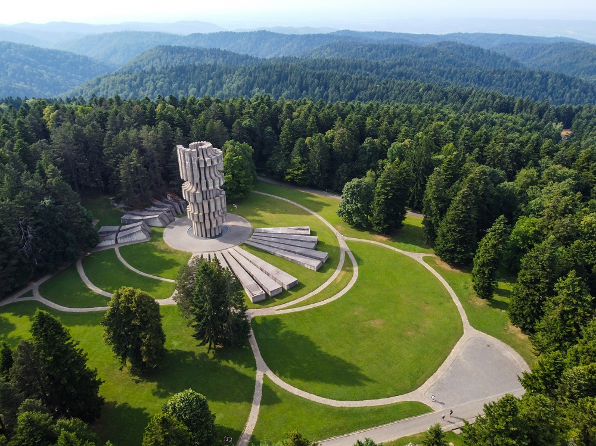
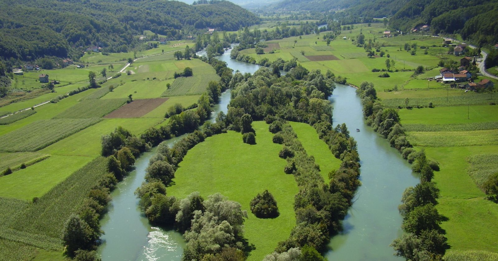
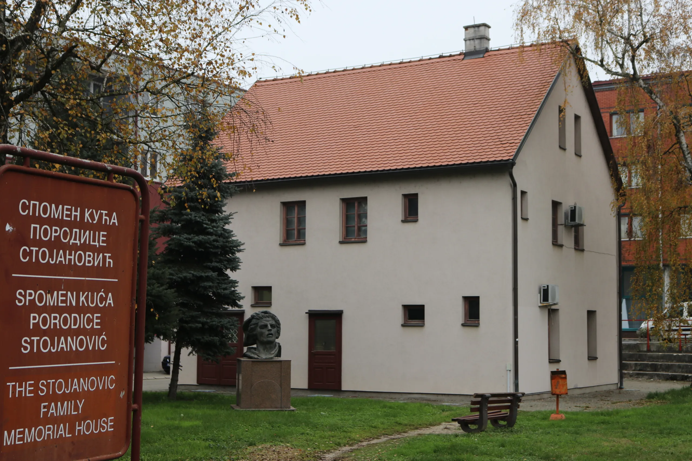
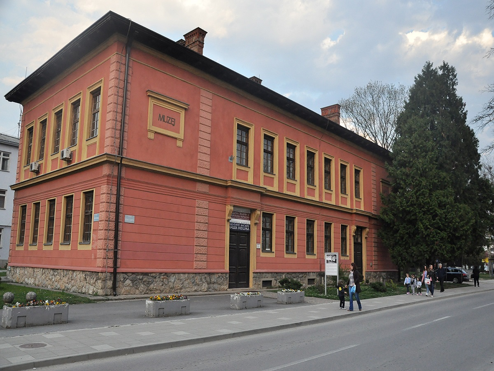

Najpoznatija mjesta u Prijedoru i okolini

Kozara je planina i nacionalni park koji se nalazi nedaleko od Prijedora i predstavlja jedno od najvažnijih prirodnih područja u ovom dijelu Bosne i Hercegovine. Poznata je po gustim šumama, čistom planinskom zraku i bogatoj flori i fauni. Zbog svoje prirodne ljepote često se naziva i “zelena oaza” ovog kraja. Ljeti je idealna za šetnje, planinarenje i biciklizam, dok je zimi popularna za skijanje i sankanje. Na najvišem dijelu Kozare nalazi se spomenik. Ovaj spomenik posvećen je borcima i civilima koji su stradali tokom Drugog svjetskog rata, posebno u Kozarskoj ofanzivi. Spomenik je masivan i arhitektonski veoma upečatljiv, sa betonskim oblicima koji simbolizuju otpor, snagu i stradanje naroda. Oko spomenika se nalazi i memorijalni zid sa imenima žrtava, što cijelom mjestu daje snažnu emotivnu i istorijsku vrijednost.

Rijeka Sana protiče kroz Prijedor i jedan je od najvažnijih prirodnih simbola grada. Ime rijeke potiče od latinske riječi “sana”, što znači “zdrava”, što dovoljno govori o njenoj nekadašnjoj čistoći i značaju. Sana je poznata po svojoj ljepoti, zelenkastoj boji i obalama koje su bogate vegetacijom. Duž rijeke se nalaze šetališta i mjesta za odmor, a stanovnici je često koriste za ribolov i rekreaciju. Ona ima važnu ulogu u životu grada, kako prirodno, tako i kulturno.

Kuća doktora Mladena Stojanovića nalazi se u Prijedoru i predstavlja memorijalni objekat posvećen ovom poznatom ljekaru i narodnom heroju. Mladen Stojanović bio je simbol humanosti, hrabrosti i borbe tokom Drugog svjetskog rata. U njegovoj kući danas se nalaze izloženi predmeti, dokumenti i fotografije koje prikazuju njegov život i djelovanje. Posjetioci mogu da saznaju više o njegovoj ulozi u istoriji, kao i o vremenu u kojem je živio i radio. Ova kuća ima veliku istorijsku i obrazovnu vrijednost.

Muzej Kozare je važna kulturna institucija koja čuva istoriju Prijedora i šireg područja Kozare. U muzeju se nalaze različite zbirke koje prikazuju život ljudi kroz različite istorijske periode, posebno fokusirane na Drugi svjetski rat. Posjetioci mogu vidjeti stare fotografije, dokumente, oružje, uniforme i druge predmete koji svjedoče o teškim vremenima kroz koja je ovaj kraj prošao. Muzej ima i edukativnu ulogu jer pomaže mladim generacijama da razumiju svoju istoriju i kulturno naslijeđe.